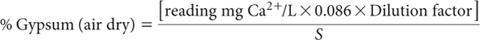
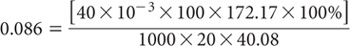

Solid phase water-soluble sulfates, especially gypsum (CaSO4.2H2O) occur in many Australian soils in low rainfall areas and in wetter areas with high evaporation rates (Rayment et al. 1983). Gypsum is also added to soils as a source of soluble S and also as a soil amendment to lessen the adverse consequences of high soil sodicity (Shaw 1988). It follows that the analysis of soils for gypsum could encounter indigenous gypsum of varying purity as well as applications that may exceed many tonnes/ha (e.g. Rayment and Ahern 1988).
Two methods are provided. The first (Method 11A1) is a chemical procedure based on soil extraction with water, the selective precipitation of gypsum with acetone, re-dissolution in water and finally the measurement of calcium (Ca2+), as a component of the gypsum. The second (Method 11A2) is an indirect method guided by Beech et al. (2003) and based on MIR diffuse reflectance spectroscopy. If virtually all the total S is derived from gypsum, then an estimate of the maximum amount of gypsum in the sample can also be obtained by multiplying total S by the factor 5.37 (Beech et al. 2003). Table 11.1 has summary details on the two gypsum methods. More details on each are covered in method preambles.
This method for gypsum in soil involves extraction with water in which gypsum is soluble to the extent of approximately 0.2 g/100 mL. This corresponds to 2% gypsum in soil following extraction at a 1:10 soil/water ratio. The maximum content of gypsum extracted at a 1:10 ratio should not exceed 1.5%, however, as the rate of dissolution of gypsum in water slows considerably near to its saturation point. Wider soil/water ratios must be employed when higher concentrations of gypsum are expected.
Following extraction, gypsum is selectively precipitated with acetone, redissolved in water, and gypsum determined by measuring Ca2+ concentration in solution (Hesse 1971).
Table 11.1. Summary detaÕs of method codes, method titles, technologies and notes on methods for gypsum in soÕs.
Code |
Technology |
Test method |
Notes |
11A1 |
Aqueous dissolution, selective precipitation of gypsum with acetone, redissolution in water and final measurement of Ca. |
Total gypsum. |
Most suited to soils with <2% gypsum. |
11A2 |
MIR reflectance spectroscopy indirect method. |
Total gypsum - MIR reflectance spectroscopy. |
Method is particularly suited to gypsum alone. Its applicability for estimating gypsum in soil is subject to overcoming soil matrix effects. |
Acetone
This reagent grade solvent [(CH3)2-CO] should contain no SO42–.
1 M Barium Chloride Solution
Dissolve 24.4 g BaCl2.2H2O in a graduated Erlenmeyer or other suitable flask and make to 100 mL with deionised water.
1 M Hydrochloric Acid (HCl)
Calcium Primary Standard
1.0 L contains 1000 mg Ca2+.
Suspend 2.4972 g calcium carbonate (CaCO3; previously dried at 110°C to constant weight) in some deionised water. Bring into full solution by cautiously adding a minimum (about 50 mL) of 2 M HCl to form a CaCl2 solution. Make to 1.0 L with deionised water in a volumetric flask. Alternatively dilute a standard analytical ampoule according to manufacturer’s instructions.
Calcium Secondary Standard
1.0 L contains 100 mg Ca2+.
Dilute 100 mL Ca Primary Standard to 1.0 L with deionised water using a volumetric flask.
Calcium Working Standards
Pipette 0, 5, 10, 15, 20 and 25 mL of Ca Secondary Standard into separate 100 mL volumetric flasks and make to volume with deionised water. These working standards cover the range 0–25 mg Ca2+/L.
Weigh 10.0 g air-dry soil (<0.5 mm) into a 250 mL wide-mouth plastic bottle when gypsum content is expected to be <1.5%. Add 100 mL deionised water, stopper the bottle and mechanically shake for 17 h. Centrifuge or filter the suspension to remove all particulate material from the supernatant. If >1.5% gypsum is expected, adjust soil weights and water volume as detailed in Table 11.2.
Test the clear supernatant for the presence of SO42– by transferring approximately 3 mL extract to a test tube. Add 10 drops 1.0 M HCl and ≈2 mL 1 M BaCl2. If turbidity develops, proceed with the analysis; absence of turbidity confirms gypsum is absent from the sample: see Note 1. When a positive SO42– test is obtained, pipette 20 mL clear extract into a 50 mL centrifuge tube. Add 20 mL acetone, mix thoroughly, let stand for 10 min and centrifuge until the supernatant is clear, then decant the liquid making sure no precipitate is lost.
Re-disperse the precipitate with 10 mL acetone by flowing the acetone from a pipette along the wall of the centrifuge tube. Centrifuge and decant, then dry the tube with precipitate in an oven set to ≈50°C. Add 40 mL (or a known volume) of water by pipette, stopper and shake until the precipitate of gypsum has dissolved. Measure Ca2+ by AAS or by ICPAES after diluting the solutions (e.g. 2x or 5x) so that concentrations fall within the range of the Ca Working Standards.
Table 11.2. Extracting conditŠns for soÕs with >1.5% gypsum.
Expected gypsum (%) |
SoÕ (g) |
Water (mL) |
SoÕ/water ratŠ |
1.5–3.0 |
5 |
100 |
1:20 |
3.0–4.5 |
5 |
150 |
1:30 |
etc. |
|
|
|

where:

S = weight (g) of air-dry soil; and
Dilution factor = dilution of final solution to bring within measuring range.
Report as gypsum (%) in oven-dry (105°C) soil. Use the air-dry moisture to oven-dry moisture ratio to make the oven-dry conversion. Refer to Method 2A1 for guidance with regard to this soil moisture calculation.
1. A qualitative indication of the presence of measurable SO42- can be obtained using portion of the 1:5 soil/water extract from Method 4A1. Test by adding a dilute solution of barium chloride, after acidifying with HCl. A white precipitate is suggestive of the presence of SO42-; no precipitate suggests little or no measurable SO42-. The HCl addition, and the corresponding possible release of CO2, avoids possible interference from carbonate ions, which could otherwise form a white precipitate of barium carbonate.
Infrared (IR) diffuse reflectance spectroscopy is an emerging technology that relies on statistical relationships between IR soil spectra and results obtained from ‘conventional’ measurements, in this case for gypsum. This non-destructive analytical option derives from the knowledge (Beech et al. 2003) that mid infrared reflectance (MIR) can be used to assess (for regulatory purposes) the purity of samples of commercial gypsum. Earlier, Janik et al. (1998) demonstrated that MIR provided an alternative technology for soil analysis. For more details, see Chapter 6.
The method relies on knowledge that there are a number of spectral peaks in the MIR spectrum that are characteristic of and sensitive to gypsum. Beech et al. (2003) noted these can be assigned to the fundamental gypsum (-O-S-O) vibrations of SO42– at 1260 cm-1, water of hydration (-OH) stretch of 3500 cm-1, and deformation vibrations (1690–1640 cm-1). Weaker peaks associated with overtones and combinations of fundamental vibrations (2234 and 5145 cm-1) may also contribute. The soil matrix adds considerable spectral complexity, which could adversely affect the usefulness of relationships between actual and predicted soil gypsum concentrations.
Laboratories using this secondary method must initially confirm the existence of strong, robust and reliable relationships between outputs from their MIR analyser and conventional measurements of soil gypsum content. Alternatively, regional or national calibration datasets may become available, derived by ‘fingerprinting’ modal examples from ‘legacy’ and new soil collections (Viscarra Rossel et al. 2008). If the conventional measurements used were originally expressed on an oven-dry basis, then the MIR results for gypsum will also allow the direct reporting of results on an oven-dry basis. Sequential scans typically take around 1–2 min/sample. This analytical option should only be used, however, when instrument calibrations, commonly but not exclusively based on partial least square regressions (Stevens et al. 2008), are known to be repeatable and of reasonably high precision (e.g. R2 values ≥0.85). Soil samples should be ≈40°C air-dry and finely ground (<0.5 mm).
Stabilise and verify the set-up and operating performance of the MIR spectrometer, usually incorporating an auto-focussing diffuse reflectance accessory or capability. Also confirm the ‘standard calibration’ for gypsum, likely based on Method 11A1.
Load the instrument’s auto-sampler with ‘unknown soils’, previously dried to ≈40°C and finely ground (≥0.5 mm) to assist with sample uniformity. Typically, the instrument or its associated computer will integrate the spectral signals with the calibration equations to provide the result without further calculation, if the conventional method’s results were expressed on an oven-dry basis. If the calibration equations were based on conventional measurements expressed on an air-dry basis (≈40°C), then the MIR results will need to be adjusted for residual moisture using relevant air-dry moisture to oven-dry moisture ratios, guided by Method 2A1.
Report as gypsum (%) in oven-dry (105°C) soil.
Beech A, Forrester S and Janik L (2003) Determining gypsum soil conditioner purity by mid-infrared – quick, economical, informative. In Proceedings of the Workshop, Tools for Nutrient and Pollutant Management – applications to agriculture and environmental quality. (Eds LD Currie and JA Hanly) pp. 405–409. Fertilizer & Lime Research Centre (in conjunction with ASPAC) Occasional Report No. 17, Massey University, NZ.
Hesse PR (1971) A Textbook of Soil Chemical Analysis. John Murray, London.
Janik LJ, Merry RH and Skjemstad JO (1998) Can mid infrared diffuse reflectance analysis replace soil extractions. Australian Journal of Experimental Agriculture 38, 681–696.
Rayment GE and Ahern CR (1988) Gypsum to improve Burdekin soils. Queensland Department of Primary Industries Refnote R12/JUL 88.
Rayment GE, Walker B and Keerati-Kasikorn P (1983) Sulfur in the agriculture of Northern Australia. In Sulfur in S.E. Asian and S. Pacific Agriculture. (Eds GJ Blair and AR Till) pp. 228–250. University of New England, Armidale.
Shaw R (1988) Soil salinity and sodicity. In Understanding Soils and Soil Data, Invited Lectures for Refresher Training Course in Soil Science. (Ed IF Fergus) pp. 109–134. Australian Society of Soil Science Inc., Queensland Branch, Brisbane, Australia.
Stevens A, van Wesemael B, Bartholomeus H, Rosillon D, Tychon B and Ben-Dor E (2008) Laboratory, field and airborne spectroscopy for monitoring organic carbon content in agricultural soils. Geoderma 144, 395–404.
Viscarra Rossel RA, Jeon YS, Odeh IOA and McBratney AB (2008) Using a legacy soil sample to develop a mid-IR spectral library. Australian Journal of Soil Research 46, 1–16.